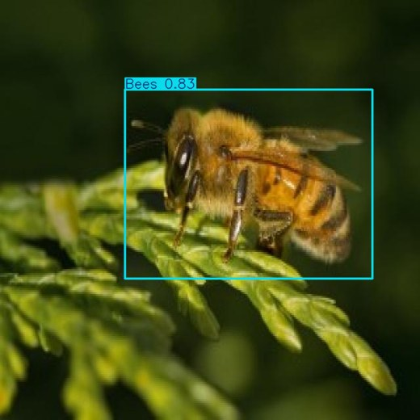

Especie benéfica
🐝 Abejas
- Impacto
- Polinizador clave: su presencia mejora el cuajado y el rendimiento.
- Manejo sugerido
- No aplique insecticidas. Si es indispensable fumigar, hágalo al atardecer, cuando ya no hay actividad de vuelo.